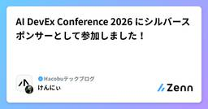

Hacobuテックブログのフィード
https://zenn.dev/p/hacobu
DXで物流の社会課題解決を目指すスタートアップ「Hacobu（ハコブ）」が運営するテックブログです。エンジニアを積極採用中です！https://career.hacobu.jp/
フィード

AI DevEx Conference 2026 にシルバースポンサーとして参加しました！
Hacobuテックブログのフィード
Hacobu は2026年7月22・23日に開催された AI DevEx Conference 2026 にシルバースポンサーとして参加しました。https://dev-productivity-con.findy-code.io/aidevex2026 AI DevEx Conference とは!（公式サイトより抜粋）今、私たちは「つくる」ことの歴史的な転換点にいます。AIのめまぐるしい進化の波は、「開発生産性」という言葉の意味さえ変えつつあります。単につくるだけなら、瞬時にアウトプットできるようになった時代に、エンジニアに求められることは何か？開発組織に求めら...
8時間前

Datadog FormsとWorkflow Automationでログイン画面のメンテナンスバナーを簡単にON/OFFできるようにしました
Hacobuテックブログのフィード
はじめにこんにちは、株式会社Hacobu プロダクト基盤部の栗山です。ログイン画面に「現在障害が発生しています」といったメンテナンスバナーを表示したいことがあります。今回は、エンジニアだけでなくビジネス側のメンバーも簡単にバナーをON/OFFできる仕組みを、Datadogの機能を組み合わせて作りました。 なぜ独自実装ではなくDatadogを選んだかメンテナンスバナーのON/OFF機能には、見た目以上に多くの要件があります。操作性：画面やフォームなどから簡単に切り替えられること。プルリクエストが必要な手順は避けたい反映の速さ：障害発生時はできるだけ早く反映されるこ...
6日前

その「新モデル微妙かも」、本当にモデルの問題ですか？
Hacobuテックブログのフィード
はじめにこんにちは！株式会社 Hacobu で MOVO Vista というプロダクトのフロントエンドエンジニアをしている cho です。新しいモデルが出ると、とりあえず普段使っている Claude Code や Codex のモデルだけを切り替えてみる。まずはいつものリポジトリを読ませて、「お、前よりちゃんと読めている」「今回はあまり変わらないかも」と感触を確かめる。おそらく、多くの人がこんなふうに新モデルを試しているのではないでしょうか。もちろん私も、最初に知りたいのは普段の仕事で使えるかどうかです。ただ、ここで少し気になることがあります。その結果は、本当に新モデルの評...
10日前
「AI利用を制限しない」と言い続けるために。Hacobuの開発組織が1年で築いたAIコストとの向き合い方
Hacobuテックブログのフィード
この1年で、プロダクト開発における生成AIの活用は一気に進みました。それに伴い、AIの利用コストも大きく増加しています。日々AIのコストに向き合っている方々も増えているのではないでしょうか。Hacobuでもちょうど1年前から、全エンジニアにAIツールを無制限で配布しており、AI活用を進めています。そしてもれなくAIの利用コストも大きく増加しました。https://note.hacobu.jp/n/n55e38c3399a6AIの利用コストが跳ね上がると、利用制限に踏み切る流れになりがちです。しかしHacobuでは、この1年のあいだ「利用を制限しない」という方針を貫いています。導入か...
11日前
アーキテクチャを“規約”ではなく“CI”で守る — 依存方向を機械強制するフロントエンドテンプレートの設計
Hacobuテックブログのフィード
はじめにこんにちは。株式会社 Hacobu で、トラック予約受付サービス MOVO Berth の設計・開発を担当している高橋 悟生です。私たちは、Web フロントエンド向けの共通テンプレート（React）と、ネイティブ向けの共通テンプレート（React Native / Expo）を内製しています。両者は独立したテンプレートですが、アーキテクチャの守り方は共通です。一言でいえば 「アーキテクチャを“規約ドキュメント”ではなく“CI”で守る」。これに尽きます。この記事では、その中核である package-by-feature アーキテクチャと依存方向の機械強制を、実際の設定とと...
1ヶ月前
TSKaigiでプラチナスポンサーとして参加しました！
Hacobuテックブログのフィード
はじめにHacobuは、2026年5月22日〜23日に開催されたTSKaigi 2026にプラチナスポンサーとして参加いたしました。昨年はロゴ掲載のみのブロンズスポンサーでしたが、今年は初めてブースを出展し、2日間のイベントに参加することができました。参加を決めた背景には、大きく2つの理由があります。どんなイベントなのかを確かめたかった：これまでTSKaigiにブースを出したことがなかったため、実際にどのようなイベントなのか、どういった効果が期待できるかを確かめたいという目的がありました。メンバーの登壇枠を取りに行きたかった：弊社エンジニアのGOさん（@takahas...
1ヶ月前
VPoEと現場をつなぐ実行チーム「Engineering Office」が生まれました
Hacobuテックブログのフィード
はじめにこんにちは。HacobuのVPoE室で組織開発に取り組んでいます。以前、「VPoE室とは何をするチームなのか」という記事を書きました。https://zenn.dev/hacobu/articles/95ac5adf916e82今回はその続きです。あの記事のあと、VPoE室の中にEngineering Officeという新しいチームが生まれました。やっていることの軸は前回から変わっていません。ただ、専任のチームになったことで、組織の中で果たす役割と、これから力を入れたいことがはっきりしました。Engineering Officeは、VPoEが描く方針と現場のあいだに...
2ヶ月前
社内ハッカソンの目的を見直した - 顧客価値起点とAI技術起点、2つの出発点で取り組める場にした
Hacobuテックブログのフィード
4月に社内のテックハッカソンを開催しました。3ヶ月に1度、複数の職種がチームを組み、1日かけてアイデアを形にする社内イベントです。発表会では、まだ実験段階のものから、すぐにでもユーザーに届けたくなるものまで、さまざまな発表が並びました。もともとは「AIハッカソン」と呼んでいましたが、「テックハッカソン」に呼び方を変え、ハッカソンのテーマも広げました。今回はテックハッカソンとしての2回目の開催です。AIを使うことが起点だった場から、普段の仕事から離れて顧客価値最大化のためにいろんなことを試せる場へと広げました。この記事では、何を変えて、その後にどんなことが起きたかをまとめました。...
2ヶ月前
オフィスを勉強会会場として貸し出してみた話
Hacobuテックブログのフィード
はじめに技術広報の活動として、以前からやってみたいなと思っていたオフィスの会場貸し出しを先日はじめて実施しました。他社で会場貸し出しをしていることを知り、僕も同じような形でやってみたいと思ったのがきっかけです。記念すべき第 1 回目の会場提供先は、CodeRabbit User Group Tokyo #1 です。https://crug.connpass.com/event/384928/25名ほどのエンジニアの方々にお集まりいただきました。 勉強会開催に向けた準備初めての試みだったため、まずはスムーズに開催できるよう、基本的な準備を進めました。 収容人数の確...
3ヶ月前
Lookerを使用したダッシュボードの提供手順をAIで自動化して、時間より集中力を取り戻した話
Hacobuテックブログのフィード
こんにちは。今年1月にHacobuに入社したfwtoshです。CTO室でデータエンジニアとしてLooker運用を担当しています。Hacobuでは、顧客企業ごとにLooker上でBIダッシュボードを提供しています。入社してすぐ、この顧客ごとのBIダッシュボードの初期セットアップを任されました。手順書を開くとLooker操作を含む10ステップ。権限操作はミスが許されません。しかもステップごとに入力値の生成、確認、実行、成果物の確認と自社画面との往復が激しく、集中力の消耗も大きい作業でした。「これはツール化するしかない」と思い、Claudeの力を全面的に借りて社内ツールを作りました。弊社...
3ヶ月前
AIを使いこなせていないデザイナーの正直な話
Hacobuテックブログのフィード
1. 「AI爆速活用」の波に乗れず、焦っている「AIでプロトタイプを爆速で作った」「デザインの工数が半分になった」――SNSやブログにそういった話が流れてくるたびに、なんとなく焦りを感じています。Hacobu入社3ヶ月のデザイナーのあずです。前職でも約10年ほどアプリのプロダクトデザイナーをしていたので、デザイン経験自体はそれなりにあります。でも、AIの活用という点では、正直まだ手探り状態が続いています。同じように感じている人もいるのでは？と思い、現時点での状態を書いてみることにしました。 2. 恵まれた環境でCursorやClaudeに挑んだ記録普段の業務でAIを全く使...
3ヶ月前
FlutterからReact Nativeへ。物流アプリのリプレイスに挑んでいる話
Hacobuテックブログのフィード
はじめにこんにちは、株式会社HacobuでMOVO Driverアプリのエンジニアをしているまうです。今回は、私たちが現在進めている FlutterからReact Native のリプレイスプロジェクト についてお話しします。私自身はもともとAndroidエンジニアで、React Nativeは未経験からのスタートでした。この記事では、なぜ今回リプレイスするのか、React Nativeを実際に触ってみてどうだったかをお伝えします。 MOVO Driver とはMOVO Driverは、トラックドライバーの業務を効率化する無料のスマホアプリです。MOVOの各サービスとのタ...
3ヶ月前
現場に行ってわかった、「仕様の正しさ」より大切なこと
Hacobuテックブログのフィード
こんにちは、HacobuでQAエンジニアをしている【いと】です。今回は、私が現場訪問を通じて感じたことや、QAとしての視点がどう変わったかについて書いてみました。ぜひ最後まで読んでいただけると嬉しいです。 Hacobuには「現場に行く文化」があるHacobuは物流課題を解決するためのソリューションを提供しています。日々解決のため、社員全員で課題に取り組んでおります。様々な文化が根付いていますが、私の中で一際「面白いな」と思った文化があります。それは「営業だけではなく、エンジニア（開発・QAなど）も含めてメンバーが積極的に現場訪問に行く文化です。プロダクトを作る側の人間...
4ヶ月前
Claude CodeやCoworkの利用ログをDatadogで可視化する
Hacobuテックブログのフィード
背景こんにちは、株式会社Hacobu プロダクト基盤部の栗山です。弊社では、生成AIツールの活用を全社的に推進しています。その取り組みの中で、社内ではCoworkの利用も急速に浸透してきました。さらに最近では、エンジニアに限らず、非エンジニアのメンバーも自らコードを書いて業務を効率化するなど、職種の垣根を越えたAI活用が広がっています。このような状況の中で、次のようなニーズが顕在化しました。誰がどれくらいClaude CodeやCoworkを使っているのか把握したいコストを可視化したいAI活用の成果(例：コード生成量やPR作成量など)を定量的に見たい上記の課題を解...
4ヶ月前
Google Workspace Studio で技術広報の相談から資料のドラフトを自動作成できるかやってみた
Hacobuテックブログのフィード
はじめに1on1 やレビューの現場では、エンジニアが技術の話やトラブル・考えについて語る場面をよく見かけます。ただ、せっかく得られた知見も、口頭で終わってしまい記事として形に残ることは多くありません。背景を共有している相手への説明を、不特定多数に伝わる文章へ変換する作業は、想像以上に手間がかかるものです。そこで、最近知った Google Workspace Studio を使って、相談からアウトプットまでの流れを少しでも楽にできないか試してみることにしました。 アウトプットを阻む心理的障壁の正体エンジニアが口頭で説明しているときは、頭の中にある情報の解像度が非常に高いはず...
4ヶ月前
AI時代にQAがボトルネックにならないために
Hacobuテックブログのフィード
agent-browserでマニュアルテストを自動化してみたこんにちは。HacobuでQAエンジニアをしているドラです。最近の開発現場では、AIの活用によってコードを書くスピードが日進月歩で向上しています。AIペアプログラミングやコード生成の普及によって、機能開発のスピードはこれまで以上に加速しています。しかし、その一方でふと思いました。「QAはこのスピードについていけているのか？」今回は、AI時代の開発スピードにQAが追いつくための取り組みとして、agent-browserを使ったテスト自動化の実験について紹介します。 AI時代の開発スピードとQAのギャップA...
5ヶ月前
数万通りの書式をプロンプトエンジニアリングなしで攻略するAI-OCRのしくみ
Hacobuテックブログのフィード
多くの業界でデジタル化が進む中、物流領域では配送依頼や受発注のデジタル化が遅れており、FAX、PDF、紙でやり取りされている現場がまだ数多く残っています。FAXで受け取ったものを基幹システムへ手入力する作業に専任の人員を配置している企業も珍しくありません。Hacobuでは、このような業務を生成AIで置き換えるプロダクトを開発し、書類の書式とOCR結果のお手本を渡すだけで、数分後にはその書式を好きな出力形式で高精度にOCRできる仕組みを実現しました。この記事では、そのプロダクトの技術構成についてお話しします。 実現したUXユーザーがやることは2つだけです。読み取りたい書類をア...
5ヶ月前
エンジニアリングでバックオフィスを加速する〜月初の請求書地獄をPlaywright MCPで終わらせた〜
Hacobuテックブログのフィード
こんにちは！VPoE室のとしです。VPoE室は、採用や体制設計、文化づくりなどを通じて、プロダクトチームが最大限の価値を出すための“土台”を整えるチームです。一方で、組織を支える業務の中には定型作業も多く、事務的な負荷が積み重なると、伴走者として本質的な支援に使う時間が削られてしまいます。そこで、今回は月初に届く業務委託請求書を、経営・支出管理SaaSで支払い申請するオペレーションを、Playwright MCPを使って自動化した話を紹介します。この挑戦は、テクノロジー本部で定期開催されているAIハッカソンをきっかけに生まれたネタでもあります。関連記事：https:/...
6ヶ月前
「なんとなく良さそう」から抜け出す。組織開発の効果測定として『因果推論』に入門してみた
Hacobuテックブログのフィード
エンジニアの組織開発では、次のような施策に取り組んでいる方は多いはずです。「心理的安全性を高めるために1on1を導入した」「情報共有を促すためにドキュメント文化を推奨した」「学習文化を作るために勉強会を開催した」しかし、いざ「その施策に効果はあったのか？」と問われると、どうしても回答は定性的になりがちです。「なんとなく雰囲気が良くなった気がする」「アンケートの評判も上々だ」……。もちろん、現場の熱量や直感は大切ですし、定性的なフィードバックも無視できません。でも、心のどこかではずっと「本当のところ、これって効いてるんだっけ？」というモヤモヤを抱えていました。では、組...
6ヶ月前
5月31日の1ヶ月後は何月何日？答えは言語やライブラリによって異なるらしい
Hacobuテックブログのフィード
みなさんは「5月31日の1ヶ月後はいつになるか？」と聞かれると何と答えますか？単純に月に1を加算するだけだと「6月31日」となって存在しない日付を指してしまうので、何らかの調整が必要になってきます。どうやらこの日付の扱いはプログラミング言語やライブラリによって異なるようです。そこで以下のケースについて、Python, JavaScript, Go の標準ライブラリおよび主要なサードパーティライブラリがどのような答えを出すのか検証してみました。検証するケース基準日：5月31日操作：1ヶ月後論点：6月30日（月末合わせ）か、7月1日（オーバーフロー）か？ Python...
6ヶ月前